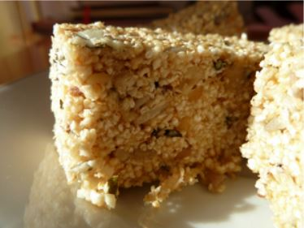

Zastąpi batonik musli. Jest pyszny, kalorynczy i odżywczy
Rozpuść masło z miodem (nie gotuj).
Dodaj szczyptę soli, imbiru.
Nasiona, orzechy upraż lekko na patelni, mieszając drewnianą łyżką.
Do rozpuszczonego masła dodaj popping, nasiona, orzechy, tahinę, sok z cytryny.
Dokładnie wymieszaj i przełóż do foremki, wypłukanej zimną wodą. Mocno ubij drewnianą łyżką i schowaj do lodówki na parę godzin.